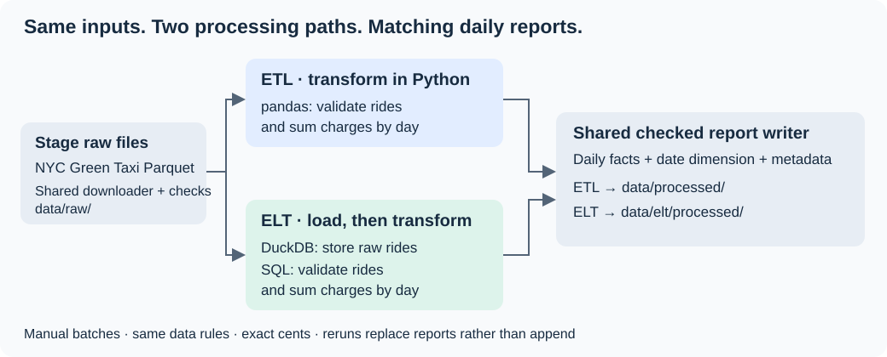
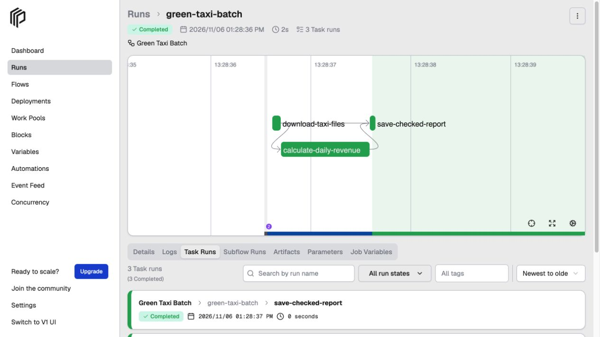
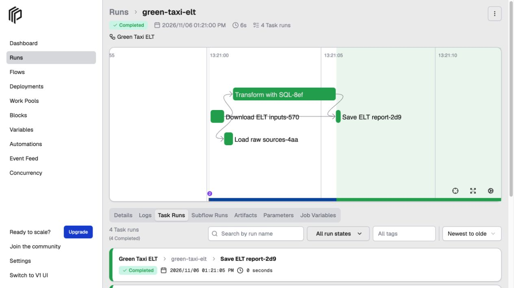

My engineering focus
The goal was to build a daily revenue pipeline for NYC Green Taxi data. I focused on the engineering: clear objects, explicit data rules, and safe repeated runs.
What steps did I take?
I inspected the files and chose pickup date and recorded total charge for the daily report. Then I built small objects to download, calculate, and save it.
I tested invalid records, download failures, and repeated runs. Docker packages the runtime. Prefect runs the same objects and shows where failures happen.
I also compared Python ETL with DuckDB/SQL ELT: calculate before saving, or load raw records first and calculate in the database. Both use the same rules.
Watch the pipeline run
See how ETL and ELT share the work

- ETL: Python cleans the rides and calculates daily revenue.
- ELT: Load the rides into DuckDB first. SQL then cleans them and calculates daily revenue.
- Shared code: Both use the same downloader and report writer.
What challenges did I face?
Data rules
Negative charges could be refunds or adjustments. Removing them would raise the total, so I kept negative and zero charges and documented why. The report measures recorded charges, not profit.
Correctness
A green Prefect run only means execution finished. I independently checked every daily count and amount, accounted for exclusions, and read saved reports back. Rerunning did not double the totals.
About 146,000 rides produced 90 daily rows. ETL and ELT matched on the reviewed files. That shows consistency, not that every source record is correct.
Simplicity
I wrote the download and save code once. ETL and ELT share it. ETL cleans and adds up the rides in Python. ELT first loads them into DuckDB, then SQL does that work. Both follow the same rules and use the same report writer. Prefect calls these existing objects.
Choosing the tools
I started with Python because I could use familiar objects and tests for the whole pipeline. dbt would add another project and configuration to maintain for a small report. For the ELT comparison, I did use separate SQL files. DuckDB runs them directly, without dbt.
See the runs in Prefect

- Download the taxi files.
- Clean the rides and calculate daily revenue in Python.
- Check and save the reports.

- Download the taxi files.
- Load unchanged rides into DuckDB.
- Use SQL to apply the rules and calculate daily revenue.
- Check and save the reports. Keep the raw records in the database.
Prefect shows execution. I check the saved report separately.
What would I do differently with more time?
Keep a failed save from changing the previous report
I would improve how the report files are saved. For example, the CSV might save successfully while the Parquet file fails, leaving files from different runs. I would prepare and check all the new files separately, then make the complete report available together. If saving fails, the previous report should stay untouched.
Choose between ETL and ELT based on evidence
I would compare Python ETL and DuckDB/SQL ELT to decide which fits the project. I would measure processing time and resource use, then look at how the data moves and how easy each version is to change. The choice between ETL and ELT should come from numbers and the workflow, not feelings or assumptions.
The takeaway
I thought most of the work would be getting the data through the pipeline. That turned out to be the easier part. The bigger challenges were organizing the code, testing failures, and getting the infrastructure working with Docker and Prefect. I also had to think about changing it later without breaking things.
My biggest lesson was that a working pipeline is only the beginning. The harder part is choosing a design I can understand, test, and maintain without making every change a bigger job.
Back to the start ↑